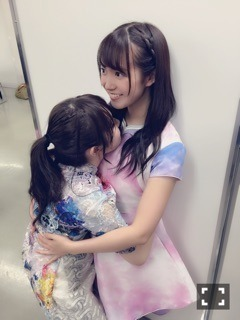
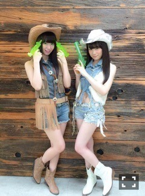

| 2016/06 27 Mon | ひめたん-0o0-その649 |
土曜日は幕張メッセで
アルバム個別握手会でした！
1部 ポピパッパパー
2部 嫉妬の権利
3部 今、話したい誰かがいる
4部 不等号
5部 ハルジオンが咲く頃

普段着ない表題曲、選抜曲
全身はこんな感じ。

すだれ姉妹の妹、みり愛ちゃん
可愛い～～(´,,•ω•,,｀)

不等号はいつも着てるのと逆バージョン！
きいは袖のある衣装で
ひめは袖のない衣装！レアケース！
てゆかきいちゃん数日前のブログ見たよ～
最近ますます仲良しo(^o^)o
嫉妬の権利はオリジナルの
紫の衣装を着ました。
ヘアもちょいちょい変えてたんだけど
気づいたかなー？
関東での握手会は
ちょっと久々ということでしたね。
46時間TVや静岡ライブの感想、
終わってしまうNOGIBINGO!6、
15thシングルのことなど。
それから、真夏の全国ツアー行くよって
たくさんの方が言ってくださって
ああ、もう夏か～って思いました。
言われて始めて実感が湧いてくる
時の流れって恐ろしいのね。笑
ぼやっとしてる間に
終わったなんてことに
ならないよう頑張ります(｀・ω・´)
次はパシフィコ横浜でお会いしましょう！
会いに来てくださった皆さん
ありがとうございました！

日曜の夜は、らじらー！サンデー
次回のゲストは
声優アーツにevery♡ing!のおふたり、
乃木坂からは秋元真夏ちゃんの登場です。
募集中のおたよりのテーマは
◯真夏への応援メッセージ
◯祝♡ひめたん
◯驚愕の報告
◯ブラック短冊に何を書いた？
◯"釣り師"対決
祝ひめたんですって！！
メール全力で待ってる！！笑
おたよりの宛先はこちら
ここで雑誌の話を少し。
別冊カドカワ 総力特集 乃木坂46 vol.2
乃木坂ちゃんのラジオ番組特集てことで
取材していただいてます
私はもちろん「らじらー！サンデー」。
スタジオの様子を撮ってもらったり
インタビューもたくさんお話したな～
ラジオのこと、乃木坂のグループのこと、
個人的に考えていること......
とか色々お話した気がします。笑
CDでーた
北野・中元で載ります！
それぞれのインタビュー&対談
両方ありますo(^o^)o
結構たっぷりお話させていただきました～
私たちのポスターも
ついてくる予定だそうですよ～
お楽しみに！
EX大衆
飛鳥・北野・中元です！
15thシングル、それぞれの関係性など
3人でお話してきました！
テンションの差をお楽しみいただけたら
良いなと思います(・∀・)笑
個人的な話ですが、2号連続掲載！
ありがとうございます！
～お知らせ～
6/27 スペースシャワーTVプラス※再放送
6/29 別冊カドカワ
7/9 月刊ニュータイプ
7/14 CDでーた
7/15 EX大衆
7/23 UTB
7/6 3rd Birthday LIVE BD&DVD
8/5 乃木坂46 2nd写真集
写真集出ます！
当日お渡し会があるそうです！
詳しいことは公式サイトで
確認お願いします～( ˇωˇ )
君僕の歌衣装が
メンバーのみんなから好評で
勝手に嬉しい♡♡
てゆかちーちゃんも！ブログ見たよ！
めーちゃん愛に溢れてたよありがとう！
2人と同じタイミングで着れば良かった～
NOGIBINGO!6
あっという間に今夜、最終回です
パーティーみたいで楽しかったです。
NOGIROOMにも出てます
是非観てください！
若、お誕生日おめでとう♡♡
(＊´・ω・＊)
コメント(539)
2016/06/27 23:42